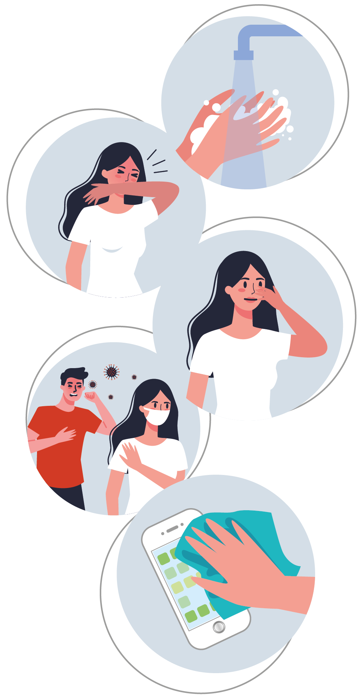
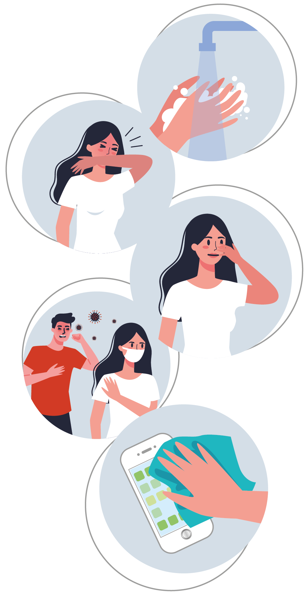

Copyright © 2020 Painel de casos de doença pelo coronavírus 2019 (COVID-19) no Brasil pelo Ministério da Saúde
Introdução
Este painel foi desenvolvido para ser o veículo de apoio na comunicação sobre a situação epidemiológica da COVID-19 nas Unidades de Saúde.
Fonte
Ministério da Saúde. Secretaria de Vigilância à Saúde (SVS): Guia de vigilância Epidemiológica.
Secretarias Estaduais e Municipais de Saúde
*População: Estimativas de 2019 utilizadas pelo TCU para determinação das cotas do FPM (sem sexo e faixa etária) Disponível em https://datasus.saude.gov.br/populacao-residente
Atualizações
O processo de atualização dos dados sobre casos e óbitos confirmados por COVID-19 no Brasil é realizado diariamente pelo Ministério da Saúde através das informações oficiais repassadas pelas Secretarias Estaduais de Saúde das 27 Unidades Federativas brasileiras. Os dados fornecidos pelos estados são consolidados e disponibilizados publicamente todos os dias, em torno das 19h.
Limitações
O processo de atualização das informações nos municípios, estados e na esfera federal é dinâmico e complexo. Os dados informados diariamente são sujeitos a alterações. Considerando a pluralidade de cada município brasileiro no que diz respeito a porte populacional, infraestrutura e organização dos serviços de saúde, além de todos os desafios que a pandemia de COVID-19 impõe, é possível que haja mudanças no número de casos ou óbitos em decorrência de erros ou atrasos no repasse das informações.
Em nível municipal, o dado do dia atual pode ser menor que o do dia anterior: isso acontece porque o município de notificação não é necessariamente o mesmo local de residência do caso ou óbito notificado. Assim, ao concluir o processo de investigação de cada ocorrência individualmente, as Secretarias Municipais e Estaduais de Saúde possuem autonomia para corrigir a informação e repassá-la ao Ministério da Saúde.
Os casos e óbitos são atualizados por data de notificação. O Ministério da Saúde vem trabalhando em conjunto com as Secretarias Estaduais e Municipais de Saúde para divulgação desses indicadores.
Casos em acompanhamento
São considerados como “em acompanhamento” todos os casos notificados nos últimos 14 dias pelas Secretarias Estaduais de Saúde e que não evoluíram para óbito. Além disso, dentre os casos que apresentaram SRAG e foram hospitalizados, considera-se “em acompanhamento” todos aqueles que foram internados nos últimos 14 dias e que não apresentam registro de alta ou óbito no SIVEP Gripe.
Casos acumulados
Número total de casos confirmados por COVID-19 que foram registrados pelas Secretarias Municipais e Estaduais de Saúde no período considerado.
Casos recuperados
Segundo a Organização Mundial da Saúde, para os casos de COVID-19 confirmados por critério laboratorial, considera-se como recuperados aqueles que tiveram dois resultados negativos para SARS-CoV-2 com pelo menos 1 dia de intervalo. Para os casos leves, a OMS estima que tempo entre o início da infecção e a recuperação dure até 14 dias.
Como ainda há uma carência no quantitativo de testes laboratoriais disponíveis no mundo, em vários países não tem sido possível aplicar esse critério, já que o foco é identificar casos novos e isolá-los, tentando conter a transmissão.
No Brasil, o número de recuperados é estimado por um cálculo composto que leva em consideração os registros de casos e óbitos com confirmação de COVID-19, reportados pelas Secretarias Estaduais de Saúde, e o número de pacientes hospitalizados registrados no Sistema de Vigilância Epidemiológica da Gripe (SIVEP Gripe).
Inicialmente, são identificados os pacientes que se encontram hospitalizados por SRAG, sem registro de óbito ou alta no sistema. De forma complementar, são considerados os casos leves com início dos sintomas há mais de 14 dias, que não estão hospitalizados e que evoluíram para óbito. A estimativa de recuperados inclui o número de pacientes hospitalizados com registro de alta no SIVEP Gripe.
Casos novos
Número de casos novos confirmados por COVID-19 que foram registrados pelas Secretarias Municipais e Estaduais de Saúde em relação ao dia anterior.
Reflete o número de casos diagnosticados e registrados pelas secretarias de saúde, não significando a data de início dos sintomas. Para análise dos casos por data de início dos sintomas, deve-se utilizar os dados do sistema e-SUS VE e do Sistema de Vigilância Epidemiológica da Gripe (SIVEP-Gripe), para os casos de Síndrome Respiratória Aguda Grave (SRAG) Hospitalizados, além dos dados provenientes dos sistemas de informação de Síndrome Gripal implantados em alguns estados.
Óbitos novos
Número de óbitos novos confirmados por COVID-19 que foram registrados pelas Secretarias Municipais e Estaduais de Saúde em relação ao dia anterior.
Reflete o número de óbitos reportados pelas secretarias de saúde na data em que tiveram a confirmação laboratorial ou clínico epidemiológica. Não reflete a data de ocorrência do óbito. Para análise de óbitos por data de ocorrência, deve-se utilizar os dados registrados no Sistema de Vigilância Epidemiológica da Gripe (SIVEP-Gripe), onde devem ser notificados todos os casos de Síndrome Respiratória Aguda Grave (SRAG) Hospitalizados ou óbitos por SRAG, independente de hospitalização. Também devem ser observados os registros de óbitos no Sistema de Informação sobre Mortalidade (SIM).
Óbitos acumulados
Número total de óbitos confirmados por COVID-19 que foram registrados pelas Secretarias Municipais e Estaduais de Saúde no período considerado.
 
